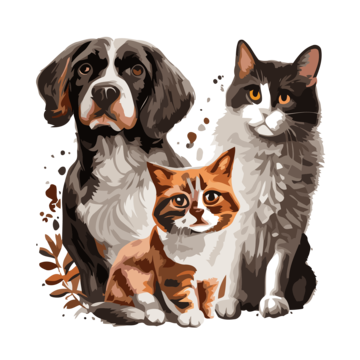
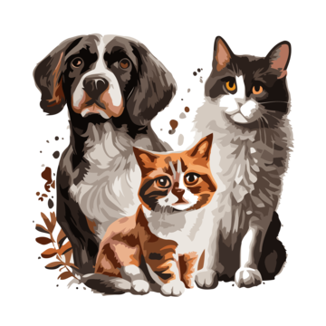

A ONG Patinhas Seguras é uma organização sem fins lucrativos dedicada à proteção, resgate e reabilitação de animais abandonados e vítimas de maus-tratos. Nosso compromisso é proporcionar uma nova chance de vida com amor, cuidado e dignidade, promovendo adoções responsáveis e conscientização sobre a causa animal.

Amor quanto mais se divide, mais se multiplica.
Adotou por meio da Patinhas e quer compartilhar sua experiência?
Estamos ansiosos para conhecer sua história e inspirar outras pessoas!
Envie o seu depoimento para a gente

"Adotar Thor foi uma das decisões mais especiais da minha vida. Ele trouxe amor, carinho e companheirismo para minha casa. Sou muito grata à Patinhas."
— Mariana S.
"Adotar a Luna mudou minha vida. Ela trouxe alegria e me ensinou o verdadeiro significado da amizade. Todos os dias são uma aventura diferente com ela ao meu lado."
— Rafael D.
"Simba é mais do que um gato, é minha companhia constante nos momentos bons e ruins. A adoção foi uma das melhores decisões que já tomei."
— Aline T.
"Max é meu protetor e melhor amigo. Ele me acompanha em todas as caminhadas e é pura energia. Adotar um cão fez minha rotina muito mais feliz."
— Carlos S.
"A Mel é um raio de sol em minha casa. Seu jeito animado e carinhoso conquistou toda minha família. A Patinhas facilitou muito esse encontro."
— Fernanda M.
"Com a Bella, descobri um amor incondicional. Ela é esperta, dócil e faz meus dias mais leves. A adoção é um ato de amor que recomendo para todos."
— Gabriel R.
"O Rocky trouxe paz e aconchego para minha vida agitada. Adotar foi uma experiência transformadora que me ensinou a importância do cuidado e respeito."
— Larissa A.
"A Zoe tem um jeito único de alegrar meus dias. Com ela, aprendi o valor da paciência e do companheirismo. A Patinhas realmente faz a diferença."
— Rafael M.
"Maya é uma pequena grande amiga. Seu amor me inspira a ser melhor todos os dias. Adotar foi o começo de uma linda história."
— Isabela P.
"Bilu é pura energia e felicidade. Ele me acompanha nas trilhas e me ajuda a relaxar após um dia estressante. Adotar foi um presente para mim."
— Thiago R.
"Nina é meu raio de luz. Adotá-la trouxe mais amor e alegria para meu lar. A experiência foi incrível e recomendo a todos que amam animais."
— Juliana F.
"Toby é meu parceiro nas corridas matinais e nas tardes de praia. A adoção mudou minha rotina para melhor e me fez entender o valor do amor verdadeiro."
— Pedro F.
"Marley tem um coração enorme e uma energia contagiante. A adoção me trouxe muita felicidade e a certeza de que fiz a escolha certa."
— Camila D."Abandonar animais é crime e um ato de crueldade. Eles sofrem com fome, doenças e
maus-tratos. Se presenciar abandono, denuncie. Adotar é um compromisso de amor e
responsabilidade para a vida
toda."
 
